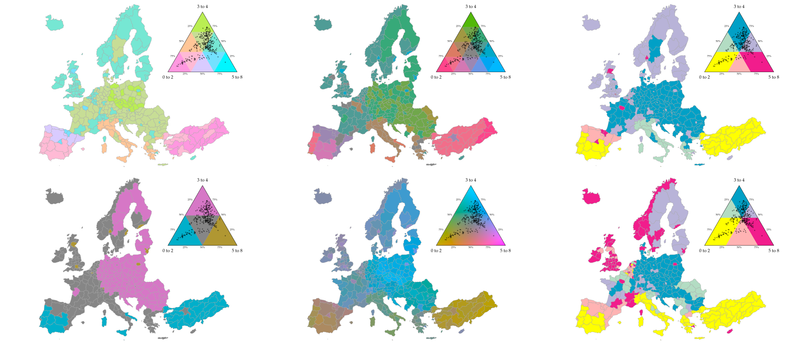

A JavaScript/TypeScript library for visualizing ternary compositions with choropleth maps, heavily inspired by the R tricolore package.

Example notebook
Example notebook (Sextant)
npm install tricolore
# or
yarn add tricolore
If you plan to use the visualization components, you'll also need D3.js, either included in your HTML document or installed via npm/yarn:
npm install d3
# or
yarn add d3
import { tricolore } from 'tricolore';
// Create some ternary compositions (p1 + p2 + p3 = 1)
const data = [
[0.7, 0.2, 0.1],
[0.3, 0.6, 0.1],
[0.2, 0.3, 0.5]
];
// Get color codes for each composition
const colors = tricolore(data, {
center: [1/3, 1/3, 1/3], // Center of the color scale
breaks: 3, // Discretization level (use Infinity for continuous)
hue: 80, // Primary hue
chroma: 140, // Color intensity
lightness: 80, // Color lightness
contrast: 0.4, // Contrast between colors
spread: 1 // Spread of colors around center
});
console.log(colors); // An array of hex color codes
import { tricolore, CompositionUtils } from 'tricolore';
// Create some ternary compositions (p1 + p2 + p3 = 1)
const data = [
[0.7, 0.2, 0.1],
[0.3, 0.6, 0.1],
[0.2, 0.3, 0.5]
];
// Compute center
const center = CompositionUtils.center(data);
// Get color codes for each composition
const colors = tricolore(data, {
center: center, // Use the computed center
breaks: Infinity, // Discretization level (Infinity for continuous color scale)
hue: 10, // Primary hue
chroma: 120, // Color intensity
lightness: 70, // Color lightness
contrast: 0.2, // Contrast between colors
spread: 1 // Spread of colors around center
});
console.log(colors); // An array of hex color codes
import { TricoloreViz } from 'tricolore';
// You can pass a DOM selector or an HTML element or a d3 selection
// as the first argument
// The second and third arguments are width and height of the SVG container
// where the plot will be rendered
const viz = new TricoloreViz('#container', 500, 500);
// Create a continuous ternary plot
viz.createContinuousPlot(data, {
hue: 80,
chroma: 140,
lightness: 80,
contrast: 0.4,
spread: 1,
showData: true,
showCenter: true,
labels: ['Factor 1', 'Factor 2', 'Factor 3']
});
// Create a discrete ternary plot
viz.createDiscretePlot(data, {
hue: 80,
chroma: 140,
lightness: 80,
contrast: 0.4,
spread: 1,
breaks: 3,
showData: true
});
// Create a sextant ternary plot
viz.createSextantPlot(data, {
values: ['#FFFF00', '#B3DCC3', '#01A0C6', '#B8B3D8', '#F11D8C', '#FFB3B3'],
showData: true,
});
import { tricolore } from 'tricolore';
import * as d3 from 'd3';
// Assuming you have GeoJSON with ternary data
d3.json('regions.json').then((geojson) => {
// Extract compositions from properties
const data = geojson.features.map((f) =>
[f.properties.var1, f.properties.var2, f.properties.var3]
);
// Get colors
const colors = tricolore(data);
// Create map
const svg = d3.select('#map')
.append('svg')
.attr('width', 800)
.attr('height', 500);
const projection = d3.geoMercator().fitSize([800, 500], geojson);
const path = d3.geoPath().projection(projection);
svg.selectAll('path')
.data(geojson.features)
.enter()
.append('path')
.attr('d', path)
.attr('fill', (d, i) => colors[i]); // Use the computed colors
});
See the full documentation for detailed API reference.
GPL-3.0 License. See the LICENSE file for details.